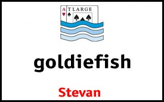

What is "ATLARGE"?
ATLARGE stands for the ATLantic city Annual Rec.Gambling Excursion. We are a diverse group of people with a common hobby: Poker! We've been gathering once each year in the springtime in Atlantic City since 1995 (with a short break). We dine, we drink, we laugh and we play poker, including LOTS of ring games plus three tournaments that we organize ourselves. This year, ATLARGE2023 will take place at The Borgata, the largest poker room in Atlantic City. Our three tournaments will be April 21, 22 and 23.
ATLARGE is the New Jersey version of http://www.barge.org (our group's biggest event, our annual gathering in Las Vegas in August). Roughly 200 people attend BARGE each year, and about 100 attend ATLARGE each year.
Registration for ATLARGE 2023 is now closed. You can review existing registrations.
Everyone of legal gambling age in New Jersey is welcome to join us at ATLARGE. Our *only* requirement is that you register with us in advance, here, on our website. We charge a small registration fee hat is used to buy our tournament winner's trophies and a commemorative coin/card protector that is given to each registrant on arrival. Here are the tournament details (structures are linked below):
- The first ATLARGE2023 tournament will be on Friday, April 21, 2023, at 10:00am. The event is styled on Mike Sexton's original Tournament of Champions event from years ago at the Orleans in Las Vegas. It is a rotation tournament consisting of Limit Stud High, Limit Omaha-8, and Limit Hold'em. After the 12th level, the tournament becomes no limit Hold'em until the end.
- The second ATLARGE2023 tournament will be on Saturday, April 22, 2023, at 11:00am. Ths event, which is the centerpiece of ATLARGE, is No Limit Hold'em.
- The third and final ATLARGE2023 tournament will be on Sunday, April 23, 2023, at 11:00am. This event will be Pot Limit Omaha with a lammer add-on, unless Goldie changes his mind.
Here is some other interesting stuff:
- Because we begin on Friday morning (10am) many of us gather on Thursday night for a group dinner. The best way to know where the dinner will take place is by subscribing to the ATLARGE mailing list (link below). The dinner is “Dutch Treat” meaning each person is responsible for what they eat and drink, including tips. We refer to this dinner as the “annual non-smoker” because we used to smoke cigars either before or after the dinner. Don’t worry if you’re not a smoker; there will be no smoking in and around the dinner itself. After dinner some of us will look for a cigar friendly place to relax. BE SURE TO SUBSCRIBE TO THE ATLARGE EMAIL LIST (bottom of this page) for ongoing information posted by our members about who’s going where, who has a car, etc.
- The buy-in for the Friday and Sunday tournaments is $100+$20+$10 (Prize Pool + House Rake + Dealer Toke Pool in the form of a chip add-on), with Saturday's tournament being $150+$20+$10. Note that as a matter of policy The Borgata withholds 3% of the Prize Pool for dealer tokes but our group prides itself on being generous to the dealers so we take an additional $10 from each player at registration time to enhance the dealer tokes.
- Buy-in for each event will be at The Borgata. Players will pay the $120/$170 to the Borgata and an ATLARGE volunteer will be at the registration line to collect the added $10 from each player.
- Registration Fees ($25 per person) must be paid in advance. Zelle is preferred (to Goldie at (973) 768-9730), or you can send a CHECK or MONEY ORDER, payable to "ATLARGE POKER", and mailed to:
Stevan Goldman
105 S. Avolyn Avenue
Ventnor, NJ 08406 - The FIRM DEADLINE for registration is noon Eastern time on Monday, April 17, 2023. If you haven't registred by then AND PAID YOUR REGISTRATION FEE you will NOT be registered for ATLARGE2023.
How Can You Participate in ATLARGE?
EVERYONE IS WELCOME! But because we all originally met over the Internet, the only rule for participation in any of our events is that you must register over the Internet. Since you're reading this, you've already come to the right place! If you fill out the registration information below, you're in! Then, all you have to do is pay for the registration fee, and show up and have fun.
Other ATLARGE Events
Dinner on April 20 is self-organized by our members. The best way to know what's going on or to suggest a place where you'd like to have dinner, is by subscribing to the ATLARGE mailing list, below on this page.
Ring Games
The Borgata will spread cash games at all limits, including an ARG favorite, the $7.50-$15.00 "pink chip" holdem game! Baby PL is also available, if there is sufficient interest.
Transportation
Unfortunately, for those planning to fly, ATLANTIC CITY is not terribly easy to reach. There is an airport just nine miles from Atlantic City, but regularly scheduled flights there are usually BRUTALLY EXPENSIVE. Once at the Atlantic City airport, cabs are readily available. The PHILADELPHIA airport is 50 miles from Atlantic City, with regular train service for only $8. Pick up the SEPTA R1 train directly in front of the Philadelphia airport terminals, and take the train to 30th Street Station in Philadelphia (three stops after leaving the airport). Change trains at 30th Street for NJ Transit for Atlantic City. NJ Transit will drop you off at the Atlantic City train station 9 blocks off the boardwalk. Your NJ Transit ticket includes no-wait bus service to all casinos when you exit the train. Schedules for these trains are located at:
- Airport to 30th Street — SEPTA.
- 30th Street to A.C. — NJ Transit.
You are well advised to check the train schedules in advance, lest you be destined to repeat ADB Jester's overnight stay in 30th Street station at ATLARGE III, missing the Smoker.
Lodging
There are no hotel codes or special rates. HOWEVER, the rates change rapidly depending on their occupancy on any given day, including weekends. I've seen Saturday nights that were going for $400 all week long become $99 on Saturday. AND, the law in NJ requires the hotel to honor their lowest rate. So ATLARGErs are encouraged to check the rates every day on line and if a rate appears that is lower than the reservation rate re-book at the lower rate, even in person while in the hotel.
Mailing List
If you aren't already signed up for it, we recommend you join the ATLARGE mailing list by clicking here. In addition to the rec.gambling.poker newsgroup, lots of us trade insults on this list. Oh, and we also keep informed about ATLARGE type stuff here too. Late registration details will also be announced there.
Registration Fee
To attend our events and play in our tournaments, everyone must register and pay the ATLARGE REGISTRATION FEE of $25. For your $25 you'll get a special gift and memento.
The $25 registration fee must be paid in advance. Before each ATLARGE tournament, each player will pay $120 (or $170 on Saturday) to the Borgata and $10 to the ATLARGE dealer toke pool, both of which will be collected when registering for our tournaments.
Firm Deadline
The registration deadline is noon Eastern time on Monday, April 17, 2023. If you have not registered and paid your $25 registration fee by that Monday before ATLARGE, you will NOT be able to attend. Please be guided accordingly.
How to Pay
Payment of your registration fee must made by check, or Zelle. If you use Zelle, you can find Goldie at (973) 768-9730. Please reference "Ventnor Party" or something creative.
If paying by check, make your check for $25 payable to ATLARGE and mail to:
Stevan Goldman
105 S. Avolyn Avenue
Ventnor, NJ 08406
When you register, please choose your badge names carefully. Your "nickname" will appear in larger print, and your "real name" below, in smaller print. Here's a sample badge:

Your registration is complete upon your registration above and Goldie's receipt of your payment. Remember, your payment must be received no later than Monday, April 17, 2023.